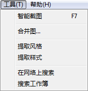
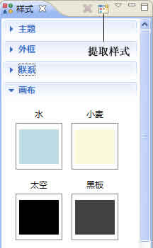
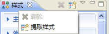

风格
XMIND中有六种各异的风格供您选择使用。您可以非常方便的为您的思维图选用合适的风格。如果有需要，您还可以自己创建合适的风格并保存，以备以后使用。方法如下：
按照下列步骤应用风格：
- 打开风格视图；
- 双击合适的风格；
- 当前的思维图风格更换成功。
按照下列步骤提取您自己设计的风格：
- 在当前图中设计您自己风格：颜色、形状、线条、背景色等等。
- 从菜单栏选择“工具 > 提取风格……”。
- 
- 在对话框中选择提取或提取并应用到当前图。
-

- 点击“完成”结束此过程。
- 您可以在风格视图中看见新的、您自己的视图。
注意：: 风格就是提取的关于当前图的一组颜色、形状、线条等属性。
样式
在XMIND的样式视图中，为主题、外框、联系和思维图分别准备了多种不同的样式供您选择使用。您还可以轻松地设计保存您自己设计的关于这四个方面的样式。方法如下：
按照下列步骤应用样式：
- 选择对象：主题、外框、联系或者思维图；
- 打开样式视图；
- 选择合适的样式，点击即可将其应用到所选对象上。

注意：
- 每次只能选择一种对象。
- 每种对象一次可以选择多个。
按照下列步骤建立您自己的样式：
- 选择对象；
-
按照自己的需要对其应用各种属性：
- 主题：主题文字的字体、主题的形状以及颜色等。
- 外框：形状、颜色、透明度、线的样式、颜色、宽度等。
- 联系：联系线的形状、样式、颜色以及文字。
- 思维图：图的背景颜色、彩虹色以及线条渐粗等。
- 打开样式视图；
- 点击视图工具栏上的提取按钮即可添加；
- 为新添加的样式命名。
按照下列步骤编辑已添加的样式：
- 在样式视图中选择样式；
-
进行下列编辑：
- 点击“F2”为其重命名。
- 点击“Delete”删除此样式。
样式视图工具栏的下拉菜单

您可能还对下列内容感兴趣……